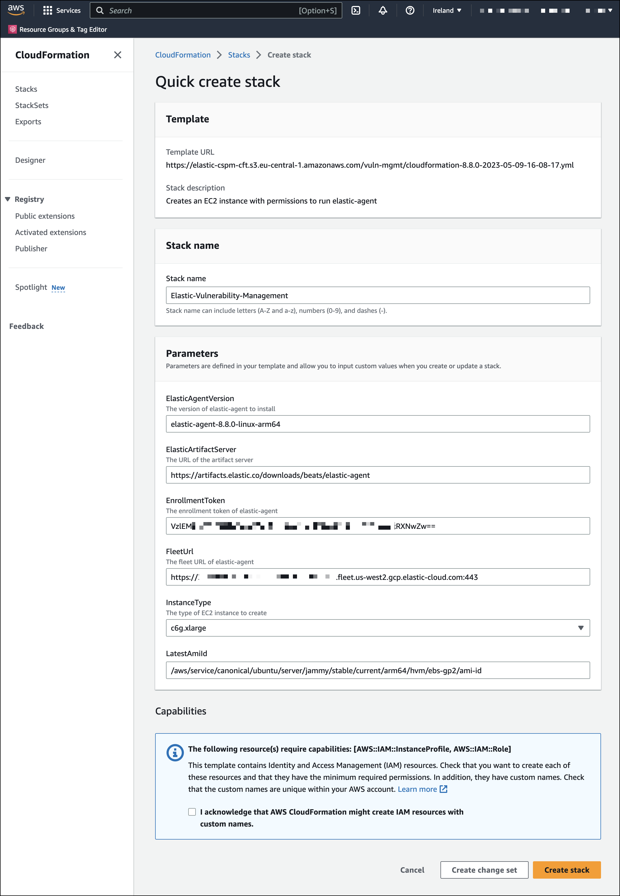

Get started with CNVM
edit[preview] This functionality is in technical preview and may be changed or removed in a future release. Elastic will work to fix any issues, but features in technical preview are not subject to the support SLA of official GA features.
This page explains how to set up Cloud Native Vulnerability Management (CNVM).
Requirements
-
CNVM only works in the
DefaultKibana space. Installing the CNVM integration on a different Kibana space will not work. - Requires Elastic Agent version 8.8 or higher.
- CNVM can only be deployed on ARM-based VMs.
-
To view vulnerability scan findings, you need the appropriate user role to read the following indices:
-
logs-cloud_security_posture.vulnerabilities-* -
logs-cloud_security_posture.vulnerabilities_latest-*
-
- You need an AWS user account with permissions to perform the following actions: run CloudFormation templates, create IAM Roles and InstanceProfiles, and create EC2 SecurityGroups and Instances.
CNVM currently only supports AWS EC2 Linux workloads.
Set up CNVM for AWS
editTo set up the CNVM integration for AWS, install the integration on a new Elastic Agent policy, sign into the AWS account you want to scan, and run the CloudFormation template.
Do not add the integration to an existing Elastic Agent policy. It should always be added to a new policy since it should not run on VMs with existing workloads. For more information, refer to How CNVM works.
- Find Integrations in the navigation menu or use the global search field.
- Search for Cloud Native Vulnerability Management, then click on the result.
- Click Add Cloud Native Vulnerability Management.
-
Give your integration a name that matches its purpose or the AWS account region you want to scan for vulnerabilities (for example,
uswest2-aws-account.)
- Click Save and continue. The integration will create a new Elastic Agent policy.
- Click Add Elastic Agent to your hosts.
- Open a new browser tab and use it to sign into your AWS management console.
- Switch to the cloud region with the workloads that you want to scan for vulnerabilities.
The integration will only scan VMs in the region you select. To scan multiple regions, repeat this setup process for each region.
- Switch back to the tab with Elastic Security.
-
Click Launch CloudFormation. The CloudFormation page appears.
 - Click Create stack. To avoid authentication problems, you can only make configuration changes to the VM InstanceType, which you could make larger to increase scanning speed.
- Wait for the confirmation that Elastic Agent was enrolled.
- Your data will start to appear on the Vulnerabilities tab of the Findings page.